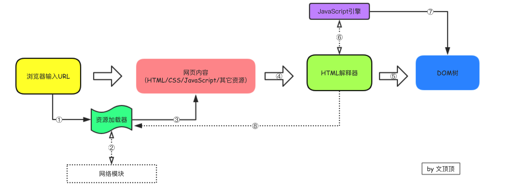
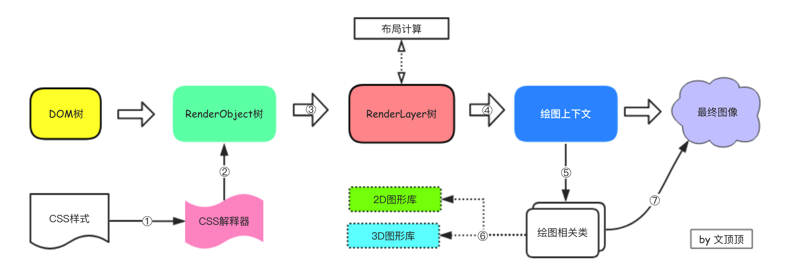

网络编程系列 HTML页面渲染的基本过程
本文描述了HTML页面渲染的基本（一般）过程，需要说明的是该文并不包含关于HTML解释器、CSS解释器、JavaScript引擎等相关部分内部的具体处理细节。该文旨在简单介绍网页从加载到被我们看到过程中，由浏览器引擎处理部分（URL网络请求相关细节可以参考网络是怎么连接的）的大概框架，主要包括以下内容
① HTML页面的基本渲染过程
② WebKit的网页渲染过程(加载和渲染)
1.0 基本渲染过程
在DOM和DOM操作基础和浏览器、HTML和内核(引擎)这两篇文章中，已经对浏览器、浏览器内核、HTML页面以及DOM等术语有了专基本的介绍，现在先简单回顾下渲染引擎的基本渲染流程：
① 解析HTML并构造DOM树(
DOM Tree)
② 构建渲染树(Render Tree)
③ 布局渲染树
④ 绘制渲染树
接下来我们开始讨论从浏览器地址栏输入URL地址敲下回车键到我们能够看到网页内容的这个过程。
把用户输入的URL转换为可视化的视图，这本身就是浏览器最最主要的功能，这个过程基本上可以划分为网页的加载和显示(渲染)两个部分。所谓网页的加载，指的主要是从用户输入URL到DOM树构建完成的过程，而网页渲染的过程，主要处理根据DOM树来生成可视化视图的部分。
当我们在浏览器的地址栏里输入了指定的URL之后，浏览器会先调用网络相关模块向指定的服务器发送网络请求，服务器接收到合法的请求后把网页文件以响应的方式返回给客户端（浏览器）。
当浏览器接收到对应的网页内容后，会先把网页内容作为输入交给HTML解释器处理，HTML解释器会将网页内容最终解释为一棵DOM树(DOM Tree)，这期间如果遇到JavaScript代码，则转交给JavaScript引擎处理，如果遇到CSS内容，则转交给CSS解释器处理。当DOM树构建完成的时候，渲染引擎将接收CSS解释器输出的样式信息，并作用于DOM树构建出一个新的内部绘图模型（也称为渲染树，即Render Tree）。在构建出渲染树之后，再由布局模块计算出各个元素的位置和大小等信息，最后交给绘图模块画出最终的视图。
为了更好的理解这个过程，这里给出基本的渲染过程图示，除必要过程外，图中还列出了该过程中需要依赖的主要模块，需要注意的是有的过程是单向的（单箭头）有的过程是双向的（双向箭头。
2.0 WebKit的渲染过程
虽然主流内核对HTML网页的渲染过程大同小异，但不同的渲染引擎其内部的处理细节差别还是比较大的，这种差别主要体现在**渲染流程和专业术语**等方面，考虑到WebKit内核当前的主导地位，这里专门挑出WebKit内核，并深入其内部的具体渲染细节。
我们把整个过程初步的划分为**根据URL加载并解析网页构建DOM树和渲染布局并绘制**这两个阶段。
** ↪ ︎通过URL加载并解析网页构建DOM树阶段 **
解析网页构建DOM树具体的处理细节
① 当用户在浏览器中输入URL的时候，WebKit内核会调用资源加载器来加载指定路径对应的网页资源（发送请求-接收响应模型）。
② 资源加载器依赖网络模块和服务器端建立连接发送请求并接收响应。
③ 接收服务器返回的响应数据，是HTML/CSS/JavaScript网页和资源文件。
④ 网页内容被交给HTML解释器处理，被转变为一系列的Token。
⑤ HTML解释器根据Token来构建Node节点，并最终形成一棵DOM树。
⑥ 如果遇到JavaScript代码，那么交给JavaScript引擎解释并执行。
⑦ JavaScript代码执行的时候可能会影响到最终DOM树的结构。
⑧ HTML解释器在处理网页内容的时候，如果发现当前节点需要依赖于其它的资源，那么将调用资源加载器来加载这些资源（CSS/图片/音频/视频等）。如果异步加载，则和DOM树的构建工作并行执行，如果是同步加载（根据URL加载外部的JavaScript文件），则会暂停DOM树的构建，直到任务处理完毕重复这个过程。
** ↪ ︎渲染布局并绘制阶段**
渲染布局以及绘制阶段具体的处理细节
① CSS样式相关的部分将被CSS解释器处理为内部表示结构。
② 将CSS解释器处理完后的样式信息附加在构件好的DOM树上，成为RenderObject树。
③ 在RenderObject节点创建的同时，WebKit内核会根据网页的层次结构来创建RenderLayer树。
④ 在RenderLayer树创建的同时，会构建一个虚拟的绘图上下文(这里不涉及具体的处理细节)。
⑤ WebKit内核处理的绘图上下文是抽象类，其将每个绘图操作都桥接到不同的具体实现类。
⑥ 绘图相关类的具体实现（不同的浏览器实现差别很大，可能涉及GPU等技术）。
⑦ 绘图实现类会将2D图形库和3D图形库绘制的结果保存并交由浏览器最终显示呈现。
3.0 其它说明
Gecko引擎的渲染过程
在浏览器、HTML和内核(引擎)这篇文章中，我们介绍了浏览器内核相关的信息，目前主流的内核主要有：Trident（IE内核）、Gecko (Firefox内核)、Webkit (Safari内核）、Blink（Chrome内核，基于WebKit）等,这里简单贴张图补充下Gecko内核引擎的渲染过程(注：图片来源于How Browsers work)。

DOM的DOMContentLoaded和onload事件
通过浏览器内置的调试工具，我们点击network网络监听调试选项刷新当前页面可以查看当前网络请求加载的所有资源、资源的大小、类型、处理时间等信息，这里有必要单独谈一谈DOMContentLoaded事件和onload事件，下图中已经标出了触发的时间节点（所以强调是因为很多人不熟悉调试工具往往注意不到这些）。